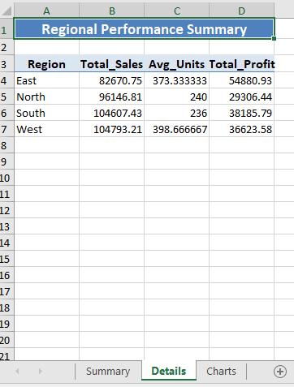

# Load packages
library(openxlsx)
library(dplyr)
library(ggplot2)Introduction
The ability to generate professional Excel reports programmatically is a crucial skill in data analysis and business reporting. In this comprehensive guide, we’ll explore how to use the openxlsx package in R to create sophisticated Excel reports with multiple sheets, custom formatting, and visualizations. This tutorial is designed for beginners to intermediate R users who want to automate their reporting workflows.
Why Choose openxlsx?
No Excel Dependency: Unlike some alternatives, openxlsx doesn’t require Excel installation and No Java dependency (unlike XLConnect)
Performance: Efficient handling of large datasets
Comprehensive Formatting: Extensive options for cell styling, merging, and formatting
Multiple Worksheets: Easy management of multiple sheets in a workbook
Custom Styles: Ability to create and apply custom styles
Memory Efficient: Better memory management compared to other packages
Active Development: Regular updates and community support
Getting Started
First, install and load the required packages:
Basic Functions and Their Arguments
Core Functions
createWorkbook()
The createWorkbook() function is just the starting point and creates a new workbook object. When you run wb <- createWorkbook(), you are creating a new, empty workbook object and assigning it to the variable wb. This workbook will serve as the container for any worksheets, styles, and data you want to add before saving it as an Excel file.
wb <- createWorkbook()addWorksheet()
The addWorksheet() function, part of the openxlsx package in R, is used to add a new worksheet (tab) to an Excel workbook created with createWorkbook().
Key arguments:
wb: This is the workbook object to which you’re adding a new worksheet. It should be an existing workbook created withcreateWorkbook().sheetName = "Sales Report": This argument specifies the name of the new worksheet. In this case, the sheet will be labeled “Sales Report.” The name you choose will appear as the worksheet tab name in the Excel file.gridLines = TRUE: This argument controls whether gridlines are visible in the worksheet.TRUE: Shows gridlines (default setting).FALSE: Hides gridlines, which can create a cleaner look in some reports.
addWorksheet(wb, sheetName = "Sales Report", gridLines = TRUE)writeData()
The writeData() function from the openxlsx package in R is used to add data to a specific worksheet in an Excel workbook. Here’s what each argument in your code does:
wb: This is the workbook object where you want to write data. The workbook should already be created usingcreateWorkbook().sheet = 1: This specifies the sheet to which you’re writing data. Here,1refers to the first sheet in the workbook. You can also use the sheet’s name (e.g.,sheet = "Sales Report") if you prefer.x = data: This is the data you want to write to the worksheet.datacan be a data frame, matrix, or vector.startRow = 1: This specifies the row in the worksheet where the data should start. In this case, data will be written beginning at the first row.startCol = 1: This specifies the column where the data should start. Setting this to1will write data starting from the first column (column “A” in Excel).
writeData(wb, sheet = 1, x = data, startRow = 1, startCol = 1)Step-by-Step Report Creation
Let’s create a sample sales report with multiple sheets, formatting, and charts.
Step 1: Prepare Sample Data
# Create sample sales data
set.seed(123)
sales_data <- data.frame(
Date = seq.Date(as.Date("2023-01-01"), as.Date("2023-12-31"), by = "month"),
Region = rep(c("North", "South", "East", "West"), 3),
Sales = round(runif(12, 10000, 50000), 2),
Units = round(runif(12, 100, 500)),
Profit = round(runif(12, 5000, 25000), 2)
)
sales_data Date Region Sales Units Profit
1 2023-01-01 North 21503.10 371 18114.12
2 2023-02-01 South 41532.21 329 19170.61
3 2023-03-01 East 26359.08 141 15881.32
4 2023-04-01 West 45320.70 460 16882.84
5 2023-05-01 North 47618.69 198 10783.19
6 2023-06-01 South 11822.26 117 7942.27
7 2023-07-01 East 31124.22 231 24260.48
8 2023-08-01 West 45696.76 482 23045.98
9 2023-09-01 North 32057.40 456 18814.11
10 2023-10-01 South 28264.59 377 20909.35
11 2023-11-01 East 48273.33 356 5492.27
12 2023-12-01 West 28133.37 498 14555.92set.seed(123): This sets the random seed to ensure that any randomly generated numbers in the code are reproducible. This is useful if you want to get the same “random” values each time you run the code.sales_data <- data.frame(...): This creates a data frame calledsales_datato store the sample sales data. A data frame is a table-like structure in R, suitable for storing datasets.Date = seq.Date(...):seq.Date()generates a sequence of dates from January 1, 2023, to December 31, 2023, with one date per month.as.Date("2023-01-01")andas.Date("2023-12-31")define the start and end dates for the sequence.by = "month"specifies that the sequence should increment by one month at a time, creating 12 monthly date entries.
Region = rep(c("North", "South", "East", "West"), 3):rep(c("North", "South", "East", "West"), 3)repeats the four regions (“North”, “South”, “East”, “West”) three times to get a total of 12 values. This column will indicate which region each data entry corresponds to.Sales = round(runif(12, 10000, 50000), 2):runif(12, 10000, 50000)generates 12 random numbers between 10,000 and 50,000, representing the monthly sales figures.round(..., 2)rounds these sales figures to two decimal places for readability.
Units = round(runif(12, 100, 500)):runif(12, 100, 500)generates 12 random integers between 100 and 500, representing the number of units sold each month.round()rounds these values to the nearest whole number.
Profit = round(runif(12, 5000, 25000), 2):runif(12, 5000, 25000)generates 12 random numbers between 5,000 and 25,000, representing monthly profit values.round(..., 2)rounds each profit value to two decimal places.
Step 2: Create Workbook and Add Sheets
Following code creates an Excel workbook and prepares it with several worksheets and customized styles for titles and headers. Let’s walk through each part.
# Create new workbook
wb <- createWorkbook()This line initializes a new workbook object (wb) where you’ll add worksheets and data. The workbook is created using createWorkbook() from the openxlsx package.
# Add worksheets
addWorksheet(wb, "Summary")
addWorksheet(wb, "Details")
addWorksheet(wb, "Charts")These lines add three worksheets to the workbook, named “Summary,” “Details,” and “Charts.” Each worksheet will be a separate tab in the Excel file.
# Create a title style
title_style <- createStyle(
fontSize = 14,
fontColour = "#FFFFFF",
halign = "center",
fgFill = "#4F81BD",
textDecoration = "bold",
border = "TopBottom",
borderColour = "#4F81BD"
)createStyle(): This function defines a custom style that you can apply to specific cells in the workbook. The style here is designed for titles and is stored intitle_style.
Arguments in createStyle() for the Title:
fontSize = 14: Sets the font size to 14 for better visibility of the title.fontColour = "#FFFFFF": Sets the font color to white, using a hexadecimal color code.halign = "center": Horizontally aligns the text to the center within the cell.fgFill = "#4F81BD": Sets the background fill color (foreground color) of the cell to a shade of blue (#4F81BD).textDecoration = "bold": Makes the text bold to emphasize it as a title.border = "TopBottom": Adds borders to the top and bottom of the cell to give the title a framed appearance.borderColour = "#4F81BD": Sets the color of the borders to match the blue fill color.
# Create header style
header_style <- createStyle(
fontSize = 12,
fontColour = "#000000",
halign = "center",
fgFill = "#DCE6F1",
textDecoration = "bold",
border = "bottom",
borderColour = "#4F81BD"
)- This style is designed for headers in the worksheets, stored in
header_style.
Arguments in createStyle() for the Header:
fontSize = 12: Sets a slightly smaller font size than the title.fontColour = "#000000": Sets the font color to black.halign = "center": Centers the text within each cell.fgFill = "#DCE6F1": Sets a light blue background fill for the header cells to distinguish them visually.textDecoration = "bold": Makes the header text bold.border = "bottom": Adds a border to the bottom of the cell.borderColour = "#4F81BD": Sets the color of the bottom border to the same blue as in the title style.
Step 3: Add Summary Data and Formatting
This code adds a formatted title and data summary to the “Summary” worksheet in an Excel workbook, then applies styling to headers and numeric data, and adjusts column widths for a polished appearance. Let’s go through each section.
# Write title
writeData(wb, "Summary", "Sales Performance Report 2023", startCol = 1, startRow = 1)
mergeCells(wb, "Summary", cols = 1:5, rows = 1)
addStyle(wb, "Summary", title_style, rows = 1, cols = 1:5)writeData(wb, "Summary", "Sales Performance Report 2023", startCol = 1, startRow = 1): This places the text"Sales Performance Report 2023"in cell A1 of the “Summary” worksheet.mergeCells(wb, "Summary", cols = 1:5, rows = 1): Merges cells from columns 1 to 5 (A to E) in the first row, centering the title across these columns to make it look like a unified title.addStyle(wb, "Summary", title_style, rows = 1, cols = 1:5): Applies the previously definedtitle_styleto the merged title cell. This style includes formatting like font size, color, alignment, and borders, giving the title a professional appearance.
# Write data with headers
writeData(wb, "Summary", sales_data, startCol = 1, startRow = 3)
addStyle(wb, "Summary", header_style, rows = 3, cols = 1:5)writeData(wb, "Summary", sales_data, startCol = 1, startRow = 3): Writes thesales_datadata frame starting from cell A3. Row 3 will contain the headers fromsales_data, while the rows below will contain the data.addStyle(wb, "Summary", header_style, rows = 3, cols = 1:5): Applies theheader_styleto row 3 (columns A to E) to make the headers bold, centered, and colored with a background fill. This improves readability and distinguishes the headers from the data.
# Format numbers
number_style <- createStyle(numFmt = "#,##0.00")
addStyle(wb, "Summary", number_style, rows = 4:15, cols = 3:5, gridExpand = TRUE)number_style <- createStyle(numFmt = "#,##0.00"): Defines a style namednumber_stylethat formats numbers with commas as thousands separators and two decimal places (e.g.,12,345.67).addStyle(wb, "Summary", number_style, rows = 4:15, cols = 3:5, gridExpand = TRUE):Applies this
number_styleto columns 3 through 5 (Sales, Units, and Profit columns insales_data) for rows 4 to 15, covering all data rows.gridExpand = TRUEensures the style applies to the entire specified range, not just the first cell in each row or column.
# Adjust column widths
setColWidths(wb, "Summary", cols = 1:5, widths = "auto")setColWidths(wb, "Summary", cols = 1:5, widths = "auto"): Automatically adjusts the widths of columns 1 through 5 (A to E) based on their content. This ensures that all data, headers, and titles are fully visible without manual adjustment.
Step 4: Create and Add Visualizations
This code creates a line chart to visualize monthly sales trends and inserts it into an Excel workbook. Here’s a step-by-step explanation of each part.
# Create monthly sales trend chart
sales_plot <- ggplot(sales_data, aes(x = Date, y = Sales)) +
geom_line(color = "#4F81BD", size = 1.2) +
geom_point(color = "#4F81BD", size = 3) +
theme_minimal() +
labs(title = "Monthly Sales Trend",
x = "Month",
y = "Sales ($)") +
theme(plot.title = element_text(hjust = 0.5, size = 14, face = "bold"))Warning: Using `size` aesthetic for lines was deprecated in ggplot2 3.4.0.
ℹ Please use `linewidth` instead.# Save plot to workbook
insertPlot(wb, "Charts", width = 8, height = 6,
startCol = 1, startRow = 1)insertPlot() is an openxlsx function that saves the current plot into a specified worksheet in an Excel workbook.
wb: Specifies the workbook to insert the plot into."Charts": Specifies the worksheet where the plot will be placed.width = 8, height = 6: Sets the width and height of the plot in inches.startCol = 1, startRow = 1: Inserts the plot starting at cell A1 of the “Charts” worksheet.
Step 5: Add Regional Analysis
Then let’s create a summary of sales data by region, writes it to the “Details” worksheet in an Excel workbook, and applies styling for a professional presentation.
# Create regional summary
regional_summary <- sales_data %>%
group_by(Region) %>%
summarise(
Total_Sales = sum(Sales),
Avg_Units = mean(Units),
Total_Profit = sum(Profit)
)
# Write regional summary to Details sheet
writeData(wb, "Details", "Regional Performance Summary", startCol = 1, startRow = 1)
mergeCells(wb, "Details", cols = 1:4, rows = 1)
addStyle(wb, "Details", title_style, rows = 1, cols = 1:4)
writeData(wb, "Details", regional_summary, startCol = 1, startRow = 3)
addStyle(wb, "Details", header_style, rows = 3, cols = 1:4)Step 6: Save the Workbook
Lastly with this command finalizes and exports the workbook, preserving all worksheets, data, formatting, and charts created in previous steps. You should see a file named Sales_Report_2023.xlsx in your working directory after this line runs.
# Save the workbook
saveWorkbook(wb, "Sales_Report_2023.xlsx", overwrite = TRUE)After saving the Excel file with the Summary, Details, and Charts sheets, I opened the file to review the output. Below, I’m sharing screenshots of each sheet to showcase the final report layout, formatting, and visualization.
In the Summary sheet, you can see the main title, followed by a detailed table with the monthly sales data. The headers and values are formatted to improve readability and create a professional appearance.
The Details sheet provides a regional breakdown with aggregated sales, average units, and profit for each region. This sheet includes formatted headers and a clear, centered title, making it easy to interpret the regional performance metrics.

Lastly, the Charts sheet contains a line graph displaying the monthly sales trend. This visualization is useful for spotting sales patterns and seeing how performance changes over the months.
These screenshots illustrate the powerful formatting and customization options available when generating Excel reports in R, making it straightforward to create polished and informative workbooks for reporting.
Best Practices and Tips for Using the openxlsx Package in R
Use Meaningful Sheet Names
Choose descriptive and relevant names for your Excel sheets. This helps users understand the content at a glance and enhances navigation within the workbook. For example, instead of generic names like “Sheet1,” use names like “SalesData_Q1” or “CustomerFeedback.”Implement Consistent Styling Across Sheets
Maintain a uniform style throughout your workbook to enhance readability and professionalism. Use consistent fonts, colors, and cell styles. You can set styles using thecreateStyle()function and apply them to multiple sheets to ensure uniformity.Include Proper Documentation in Your Code
Document your R code with clear comments explaining the purpose of each section and any specific styling or formatting choices made with theopenxlsxfunctions. This will make your code easier to understand and maintain, especially for others who may work with it later.Use Appropriate Number Formatting for Different Data Types
Apply relevant number formats for various data types, such as currency, percentages, or dates. Utilize theaddStyle()function to format cells appropriately, which improves data clarity and presentation in your reports.Test the Report with Different Data Sizes
Before finalizing your report, test it with datasets of varying sizes to ensure it renders correctly and performs well. This will help you identify any potential issues, such as layout problems or performance slowdowns, before distribution.Include Error Handling for Robust Reports
Implement error handling in your R code to gracefully manage potential issues, such as missing data or formatting errors. UsetryCatch()to catch errors during report generation, ensuring that your report generation process is robust and user-friendly.
Conclusion
The openxlsx package is a powerful and flexible tool for generating professional Excel reports directly from R. By leveraging its capabilities, you can create sophisticated reports that include multiple sheets, tailored formatting, and integrated visualizations. This package allows for extensive customization, enabling you to apply styles, set column widths, and format numbers to meet your specific requirements.
As you create your reports, take advantage of features such as conditional formatting, data validation, and the ability to add hyperlinks. These functionalities can enhance the interactivity and usability of your reports, making them not only visually appealing but also more functional.
Don’t hesitate to experiment with various formatting options, as openxlsx offers a range of functions to help you manipulate the appearance of your sheets. Adapting the code to fit your reporting needs is crucial; consider how you can automate repetitive tasks or incorporate dynamic elements that reflect changes in your data.
Additionally, always keep performance in mind—testing your reports with datasets of varying sizes will ensure that they function smoothly and remain responsive, regardless of the data complexity. Finally, robust error handling will help you create reliable reports that can withstand unexpected data issues, thereby enhancing the user experience.
By following the best practices outlined in this guide, you will be well-equipped to utilize the openxlsx package to its fullest potential, producing high-quality, professional reports that effectively communicate your insights and findings.
References
openxlsx GitHub Repository
Explore the source code, issues, and development updates for theopenxlsxpackage. Available at: openxlsx GitHubRepositoryopenxlsx Documentation
Access the official documentation for detailed information on functions, usage, and examples for theopenxlsxpackage. Available at: openxlsx DocumentationCRAN Package Page
Find installation instructions, news, and package information from the Comprehensive R Archive Network (CRAN). Available at: openxlsx CRAN Page